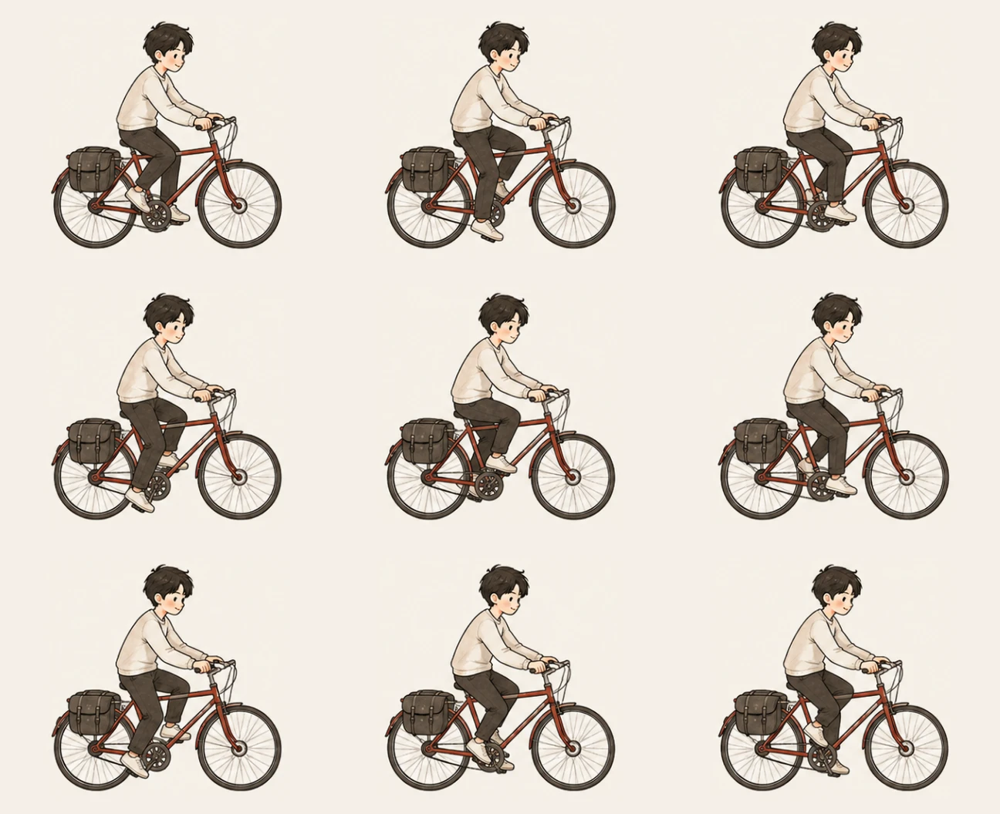

같은 그림, 계산한 움직임
기존 9프레임과 페달에 맞춰 관절을 움직이는 방식을 비교해 보세요.
기존 9프레임

생성한 그림 9장을 순서대로 재생
2D 관절 애니메이션
얼굴·상체 고정 · 일정한 페달 회전
바퀴와 다리는 같은 동작을 연속 재생
기존 그림의 얼굴과 상체를 재사용하고, 다리와 자전거 일부는 움직임을 계산할 수 있도록 다시 구성한 테스트입니다. 최종 손그림의 질감을 완성하기 전, 동작의 차이를 확인하는 용도예요. 운영 페이지의 애니메이션은 그대로입니다.